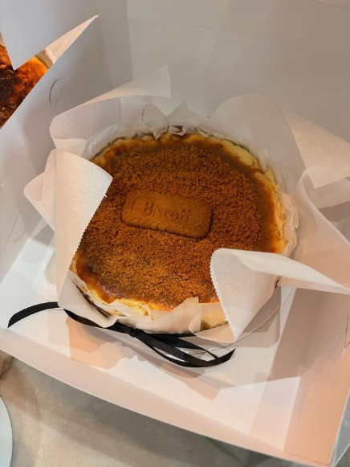
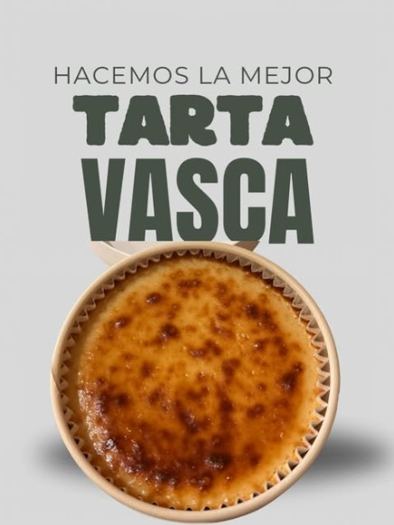
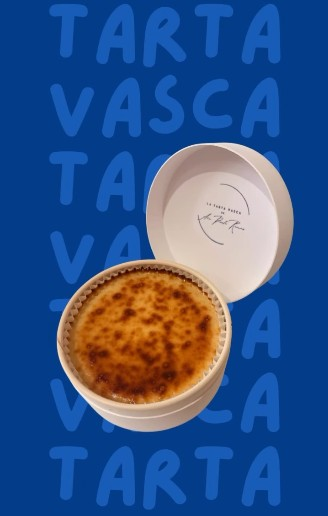

La mejor tarta
vasca, con un
pedacito de
felicidad en cada
cucharada.
Cremosa por dentro, quemadita por fuera. Ana Paula Ramos hornea cada tarta vasca en pequeños lotes, con sabores clásicos y de temporada, lista para tu mesa o para regalar.
@latarta.de.anapaula

“Todo mejora con un pedacito de felicidad en cada cucharada”
Hecha a mano por
Ana Paula Ramos
La Tarta Vasca nace del amor por la repostería tradicional del País Vasco: ese contraste perfecto entre la superficie quemada y el interior cremoso que se deshace en cada cucharada.
Cada tarta se hornea en casa, en lotes pequeños y con pedido anticipado, para garantizar que llegue a tu mesa en su punto ideal — ya sea para disfrutar en familia, sorprender en una celebración o regalar a alguien especial.
- ◆ Ingredientes seleccionados
- ◆ Horneado en pequeños lotes
- ◆ Empaque cuidado, listo para regalar
- ◆ Pedidos por WhatsApp e Instagram
Cada detalle, cuidado
100% artesanal
Horneada a mano, en pequeños lotes, con atención a cada detalle.
Ingredientes premium
Seleccionamos ingredientes de calidad para un sabor consistente.
Lista para regalar
Empaque cuidado y elegante, pensado para ocasiones especiales.
Pedido directo
Ordena fácil por WhatsApp o Instagram, sin complicaciones.

El regalo perfecto
sí existe
Cumpleaños, agradecimientos, aniversarios o “porque sí”: una Tarta Vasca en su caja especial siempre es buena idea. Cuéntanos la ocasión y te ayudamos a elegir el sabor perfecto.
Pedir un regalo@latarta.de.anapaula
Nuevos sabores, pedidos disponibles y detrás de cámaras — todo en nuestro Instagram.
Tan fácil como tres pasos
Escríbenos
Mándanos un mensaje por WhatsApp o Instagram contándonos qué se te antoja.
Elige tu tarta
Te contamos los sabores y tamaños disponibles para que elijas el ideal.
Recíbela fresca
Confirmamos fecha de entrega y coordinamos todo contigo.
Antójate y escríbenos
Resolvemos tus dudas, tomamos tu pedido y coordinamos la entrega. Estamos a un mensaje de distancia.